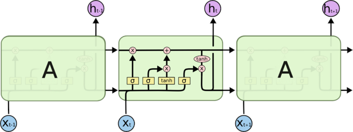
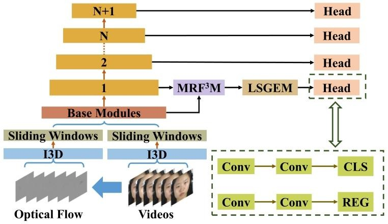
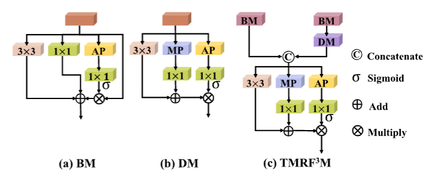
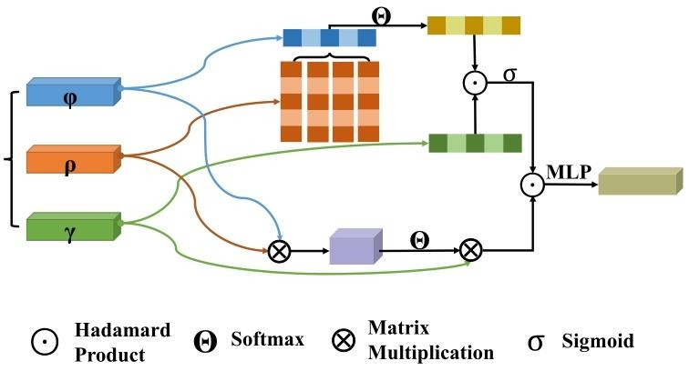
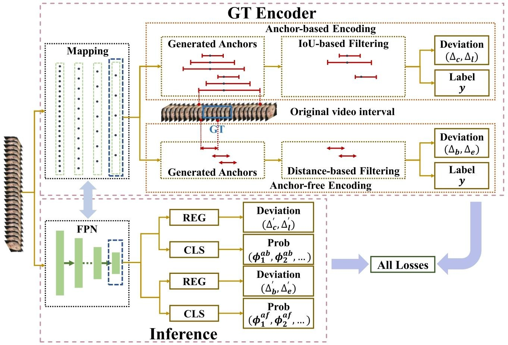
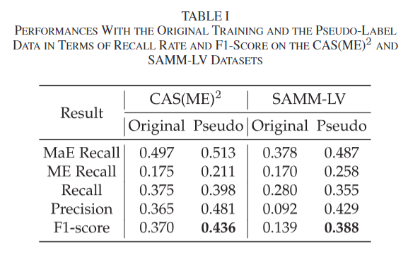
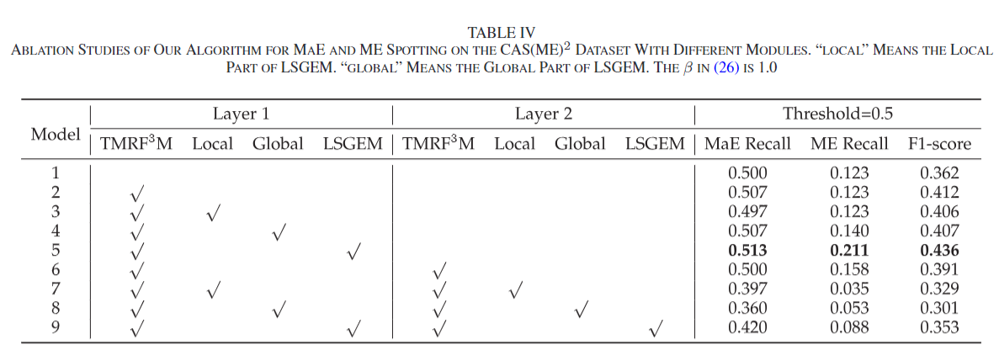
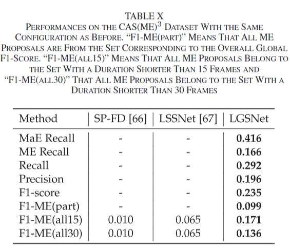
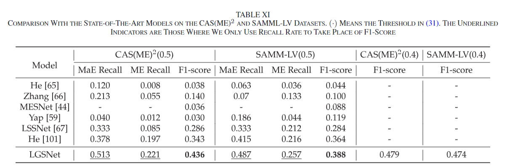

【论文阅读（一）】LGSNet: A Two-Stream Network for Micro- and Macro-Expression Spotting With Background Modeling
【论文阅读（一）】LGSNet: A Two-Stream Network for Micro- and Macro-Expression Spotting With Background Modeling
Wang-Wang Yu, Jingwen Jiang, Kai-Fu Yang, Hong-Mei Yan, and Yong-Jie Li
University of Electronic Science and Technology of China
摘要
未修剪视频中的微表情和宏表情检测是一项具有挑战性的任务，因为会大量产生假阳性样本。大多数现有方法通过从所有或部分关键原始图像中提取手工制作的特征或裁剪特定区域来定位更高响应区域，但这些方法要么忽略了连续的时间信息，要么将固有的人运动模式（背景）建模为前景。因此，我们提出了一种新颖的双流网络，名为局部抑制和全局增强检测网络（LGSNet），它以光流和视频的段级特征作为输入。LGSNet采用锚点来编码表情间隔，并选择编码偏差作为优化对象。此外，我们引入了时间多感受野特征融合模块（TMRF³M）和局部抑制与全局增强模块（LSGEM），这有助于更精确地检测短间隔并抑制背景信息。为了进一步突出正负样本之间的差异，我们在一些丢弃的滑动窗口上设置大量随机伪真值间隔（背景片段）来完成背景片段建模，以抵消无表情的面部和头部运动的影响。实验结果表明，我们提出的网络在CAS(ME)2、CAS(ME)3和SAMM - LV数据集上达到了最先进的性能。
导论
面部表情作为一种重要的非言语交流形式，能够不由自主或自愿地反映人类情绪的变化。它在极短的时间内传达诸如意图、选择、倾向等微妙的含义。表情可以分为宏表情（MaEs，也被称为常规或标准表情）和微表情。微表情通常在 0.5 秒内出现，具有非自愿性和低强度的特点。相比之下，宏表情（MaEs）是持续时间在 0.5 到 4 秒之间的明显面部变化。此外，微表情在面部的运动区域比宏表情小，有时微表情的左右面部动作单元（AUs）不对称，而宏表情的左右面部运动总是同步的。包括持续时间短和强度低在内的上述情况，是微表情难以捕捉的根本原因。而且，宏表情传达的情绪不一定真实，而当人们试图隐藏或抑制真实情绪时，微表情可以揭示真实意图。因此，微表情分析在心理诊断、刑事调查和商业谈判等高风险环境中具有价值，它弥补了传统表情分析的不足，特别是在识别谎言方面的困难。
面部表情分析包含两个部分：检测和识别。依据表情定义的类型，表情识别可被分类为基于离散标签的、基于连续模型的以及基于面部动作编码系统（FACS）的。
- 基于离散标签的面部表情识别：旨在将表情定义为六种基本离散情绪，即快乐、惊讶、愤怒、厌恶、恐惧、悲伤，或者添加中性作为第七种类型，轻蔑作为第八种类型，并在一些传统数据集（如CK+、JAFFE、FER2013、Oulu - CASIA）上开展分类任务。此外，有些定义包含三种情绪类型（积极、消极和惊讶）或者四种类型（积极、消极、惊讶和其他）。
- 基于连续模型的面部表情识别：依照心理学的效价 - 唤醒圆环模型尝试将表情定义为两个连续值（或者添加优势作为第三个连续值），并通过在数据库（如SEWA、Aff - Wild2、AffectNet、AFEW - VA）上进行回归来完成此任务。基于连续值定义表情的这些细粒度方法正逐渐取代传统的离散标签方法。另一种常见的基于连续模型的方式是将表情定义为包括愉悦、唤醒和优势（PAD）的三个连续值。
- 基于FACS的识别：试图将面部肌肉划分为动作单元（AUs），并将此任务转化为在特定数据集（如BP4D、DISFA）上检测AUs的问题。因此，宏表情识别通常基于单幅图像，采用直接分类或AU检测，也有使用视频进行回归和AU检测的趋势；而由于微表情强度低，微表情识别基于片段、关键帧。尽管保罗·埃克曼开发了微表情训练工具（METT）来帮助研究人员理解微表情的面部肌肉运动模式，但有经验的专家使用肉眼的准确率仍低于47%。在序列中检测AUs也可用于进行微表情分类。
心理学的效价 - 唤醒圆环模型（valence-arousal circumplex model）是一种用于描述和理解情绪的理论模型。在面部表情识别等相关研究中具有重要应用：
- 主要概念
- 效价（valence）：指情绪的积极或消极程度。积极情绪具有正效价，如快乐、愉悦等；消极情绪具有负效价，如悲伤、愤怒、恐惧等。它反映了个体对情绪体验的评价，即情绪是令人愉悦的还是不愉悦的。
- 唤醒（arousal）：表示情绪的激活或兴奋程度。高唤醒水平意味着个体处于兴奋、激动的状态，例如在激烈运动或面临紧急情况时；低唤醒水平则表示个体较为平静、放松，比如在安静休息或处于熟悉、舒适的环境中。
- 模型结构：该模型将效价和唤醒作为两个维度，构建出一个圆环形状的空间。情绪在这个空间中可以用一个坐标点来表示，不同的情绪位于圆环上的不同位置。例如，快乐通常被认为是高积极效价和高唤醒水平的情绪，可能位于圆环的右上部分；而悲伤则是高消极效价和低唤醒水平的情绪，可能位于圆环的左下部分。
- 应用领域
- 情绪研究：帮助心理学家更系统地研究和分类情绪，理解不同情绪之间的关系和差异。通过确定情绪在效价 - 唤醒圆环上的位置，可以对情绪进行量化和比较。
- 面部表情识别：在面部表情分析中，基于连续模型的面部表情识别尝试根据该模型将表情定义为两个连续值（效价和唤醒），或者添加优势（dominance）作为第三个连续值。通过分析面部表情所对应的效价和唤醒程度，可以对表情进行更细致的识别和分类。这对于理解人类情绪表达、情感计算等领域具有重要意义，例如在人机交互、心理诊断、情感分析等方面有应用价值，有助于开发更准确的情绪识别系统和更好地理解人类情感状态。
检测作为一项先行任务，旨在识别面部出现的连续运动是习惯性运动、宏表情还是微表情。由于表情的持续时间不一致，在稀疏的长视频中检测微表情或宏表情片段比识别要困难得多。因此，早期的数据集（SAMM、SMIC、CASME和CASME II）主要关注识别。直到CAS(ME)2、SAMM - LV和CAS(ME)3提供了包含宏表情和微表情标注间隔的长视频，才有了一些关于检测的相关工作。在实践中，微表情和宏表情之间的显著差异是持续时间不一致，这在长视频中标注间隔时是最重要的基准。然而，这种标注方法总是耗时费力的，因为两个或更多的标注者需要花费大量时间逐帧多次浏览所有视频来确定表情间隔的位置。在这种情况下，用自动检测方法取代人工标注非常值得研究。
这项工作旨在设计一种高效的自动表情检测方法。因为表情是动态且连续的，它包含起始帧、顶点帧和偏移帧来展示情绪的完整变化。起始帧是表情的起点，通常具有明显的面部突变。顶点帧显示面部肌肉变化的峰值，以便容易地传达情感信息。偏移帧定义了表情结束的时间。所以检测任务的本质是尽可能多地定位有效提案的关键帧（通常是中心），并同时确定每个提案的持续时间，从而使真实区间和所选提案之间的交并比（IoU）保持在指定阈值以上。
传统的检测方法假设在没有表情时面部没有大的变形，并旨在在固定的时间尺度内计算差异，例如局部二值模式（LBP）、方向梯度直方图（HOG）和光流。然而，表情的尺度变化极大。例如，CAS (ME) 2 数据集上最长的间隔比最短的间隔长 10 倍以上。因此，固定的时间尺度只能检测到很少的表情。一种直观的方法是采用多尺度持续时间，但由于存在一般的习惯性动作（如眨眼、撅嘴、摇头等），这反过来会产生大量的负样本。这要求我们基于更多的尺度变化覆盖尽可能多的表情，同时减少负样本。
当前基于深度学习的检测方法有两种类型：基于帧的方法和基于片段的方法。
- 基于帧的方法：基于对特定帧的判断。例如Pan等人提出基于CNN的模型将所有帧分类为宏表情、微表情或无关帧，其假设微表情和宏表情相互排斥，但实际中它们常分布在同一长视频中且面部运动相对相似；Yap等人基于对所有样本持续时间的计数进行了长短跳帧的修改。
- 基于片段的方法：大多基于长短期记忆（LSTM）网络，利用离散图像的下采样特征或区域作为输入；
- 其他的采用类似于片段提议网络的策略，即有效编码方案能高效编码所有样本并过滤负样本。
长短期记忆（LSTM）网络的结构主要包含以下部分及相关公式：
细胞状态（Cell State）
- 细胞状态是LSTM的核心，用于存储长期信息。它在时间步的更新基于遗忘门、输入门和前一时刻的细胞状态以及新的候选细胞状态。
- 更新公式：
- 其中，表示逐元素相乘。是遗忘门的输出，控制从中遗忘的信息；是输入门的输出，决定新的信息有多少被添加到细胞状态中；由输入数据和当前隐藏状态等计算得到。
门控机制（Gating Mechanism）
- 遗忘门（Forget Gate）
- 结构和计算：遗忘门用于决定从细胞状态中丢弃哪些信息。它根据当前输入和上一时刻的隐藏状态进行计算，通过一个sigmoid函数将输出值压缩在0到1之间。
- 公式：
- 其中，是sigmoid函数，是遗忘门的权重矩阵，是偏置项。的值越接近0，表示越多的信息将被遗忘；越接近1，表示越多的信息将被保留。
- 输入门（Input Gate）
- 结构和计算：输入门由两部分组成，一是决定哪些值需要更新的sigmoid层，二是生成新的候选值向量的tanh层。
- 公式
- 首先，sigmoid层：，这里控制更新的程度，与遗忘门类似，值在0到1之间。
- 其次，tanh层：，生成新的候选细胞状态，函数将值映射到 -1到1之间。
- 输出门（Output Gate）
- 结构和计算：输出门决定细胞状态的哪些信息将被输出作为当前时间步的隐藏状态。它根据当前输入和上一时刻的隐藏状态计算。
- 公式
- 首先，，其中是输出门的输出，通过sigmoid函数计算得到，控制输出的比例。
- 然后，，将细胞状态经过函数处理后与输出门的输出相乘，得到最终的隐藏状态，作为当前时间步的输出，传递到下一个时间步或用于后续的任务（如分类、预测等）。
在这些公式中，、、、分别是遗忘门、输入门（包括sigmoid层和tanh层中与输入相关的部分）、候选细胞状态计算、输出门的权重矩阵，、、、分别是相应的偏置项。这些权重和偏置在训练过程中通过反向传播算法进行学习和调整，以优化LSTM网络对时间序列数据的处理能力和预测准确性。
例如，在处理一个时间序列预测任务时，LSTM通过这些门控机制和细胞状态的更新，逐步学习到数据中的时间依赖关系。在每个时间步，输入数据进入网络，遗忘门决定上一时刻细胞状态中哪些信息不再重要需要遗忘，输入门决定当前输入中有多少新的信息可以添加到细胞状态中，新的候选细胞状态根据输入和隐藏状态计算得到，然后与遗忘门和输入门的输出一起更新细胞状态。最后，输出门根据当前状态决定输出哪些信息作为隐藏状态，用于后续的计算或预测。这种结构使得LSTM能够有效地处理长期依赖关系，在许多时间序列相关的任务中取得了良好的效果，如自然语言处理中的语言建模、机器翻译，以及时间序列预测中的股票价格预测、气象预测等领域。

然而，微表情的训练样本仍然不足，因为微表情难以收集。因此，当前基于深度学习的方法仍依赖传统手工特征或采样视频图像的多次下采样特征，忽略了原始视频的时间信息。例如，由于微表情的面部强度很微妙，多次下采样输入图像会丢失运动信息。传统手工特征往往只表征部分重要特征，丢失了微妙运动信息。即使使用多个手工特征作为输入，结果仍不理想。许多改进的传统方法增强局部面部运动以定位更多区域，但带来了更多假阳性区域。我们更倾向于从原始视频序列中提取外观信息，从原始视频的光流中生成运动信息。使用预训练模型基于原始视频序列提取特征能尽可能保留关键的时空信息。
如上所述，当前工作很少关注对负样本的编码，大多数负样本与习惯性头部或面部运动有关（本文中背景间隔和负样本基本对应）。同时，在训练阶段，主流方法最小化真实区间和预测之间的帧级差异，给长视频中的判别部分更高置信度。然而，那些习惯性动作也会产生大的帧间差异。即使依靠先验知识设置特定帧间隔来减少上述影响，也不能覆盖不同人习惯性动作的持续时间。而且，一些面部变化趋于缓慢且持续时间长。当仅检测到显著面部变化时，预定义的帧间隔会导致更少的正样本和更多的假阳性。
我们还注意到，生成短持续时间的有效提案（或间隔）更依赖于关键帧的精确定位，而生成长间隔的有效提案更依赖于持续时间的长度。然而，当前的方法很少关注细化较短间隔定位的问题。这也导致现有微表情检测方法的稳健性较差。直接原因是一旦关键帧的短提案定位有较大偏差，其与真实区间的交并比（IoU）往往趋于0，即使其持续时间被精确预测。相比之下，长提案即使与真实区间有较大偏差，只要保持合适的持续时间，仍能与真实区间保持IoU大于0.5。例如，如果将真实区间编码为一系列关键帧和持续时间，当滑动窗口长度为128帧时，对于那些短间隔（如小于20帧），学习更倾向于实现准确的关键帧定位而非预测合适的持续时间，以保持提案与真实区间的高IoU。
SAMM - LV数据集的一些较长真实区间持续时间超过4秒，有些甚至超过10秒。这种分布显然与埃克曼关于微表情持续时间小于0.5秒、宏表情持续时间在0.5到4秒之间的观察不一致。为了减弱这种分布的影响，首先，我们丢弃不符合现实分布的长真实区间以减少噪声数据的影响。为了减少相邻帧的重叠和数据集之间的差异，也有必要对当前数据进行下采样来重构SAMM - LV数据集。
据我们所知，这项工作是首次尝试提出一个双流框架，即局部抑制和全局增强检测网络（LGSNet），采用新的检测编码公式来解决上述问题。我们应用先验多级锚点来编码表情区间的中心和持续时间，利用预定义的IoU阈值过滤编码偏差并将过滤后的偏差作为优化目标。在训练期间，我们间接细化偏差和与目标区间对应的置信度。为了进一步整合多尺度特征，设计了时间多感受野特征融合模块（TMRF³M）来增强较短片段的信息。此外，设计了局部抑制和全局增强模块（LSGEM）来关注精确位置并限制较短样本的数量。在生成滑动窗口时，我们在一些废弃的滑动窗口上随机设置伪标签作为辅助数据集来实现背景间隔建模以细化定位和改进分类。为了在不丢弃外观信息的情况下保留面部运动，我们将从原始图像和光流中提取的重叠段级时空特征连接起来作为输入。来自光流的段级时间特征也可以捕获微妙的局部运动。此外，我们通过去除不现实的噪声数据并下采样到与CAS(ME)相同的FPS来重构SAMM - LV数据集。设计了一个名为具有一定k的top_threshold的改进指标以实现更合理的评估。实验结果表明我们的LGSNet在CAS(ME)2、CAS(ME)3和SAMM - LV上取得了更好的结果。我们的贡献总结如下：
- 我们探索了对表情区间的中心和持续时间进行编码并使用预定义锚点分配标签，通过间接最小化偏差而非帧间差异大大降低了模型的学习难度。
- 提出的TMRF³M和LSGEM可以从全局信息中捕获关键局部部分，用于细化较短间隔的检测。
- 我们初步证明了来自视频和光流的段级特征作为输入可以大大提高表情检测的预测。
- 为了区分正负样本的差异，我们对一些丢弃的滑动窗口进行采样并设置伪标签来模拟背景运动。
相关工作
我们详细回顾了一些与我们工作相关的先前表示方法，包括时间动作定位（TAL）、自注意力机制以及在表情检测中生成提案的一些方法。
时序动作定位
从根本上讲，在未修剪的视频中进行宏表情（MaE）和微表情（ME）的定位是一个拦截局部时间间隔进行分类的过程，这是一个典型的视频级多任务。因此，这种定位与时间动作定位（TAL）有许多相似之处。一般来说，TAL分为两个部分：基于锚点的方法和动作引导的方法。
- 基于锚点的方法通常受到目标检测研究的启发，在这种方法中，时间间隔被编码为偏差，并在滑动窗口中进行细化。其中，单步动作检测（SSAD）是一项有吸引力的工作，它基于预定义的锚点来预测回归和置信度。SSAD的金字塔架构处理不同层次的特征。多粒度生成器（MGG）也是一个金字塔网络，它有两个分支，通过一个共享网络来提取特征。然后，它融合了来自段生产者和动作性生产者的特征来预测提议。时间动作定位（TAL）扩展了faster - RCNN的管道，以在时间任务中定位目标。锚点无关的基于显著性的检测器（AFSD）为TAL提出了纯锚点无关的架构。
- 动作引导的方法通常基于自下而上的管道来聚合帧级和段级的预测。例如，结构化段网络（SSN）的模型计算动作性的潜在分布，并通过三个阶段汇集提议来定位动作实例。边界敏感网络（BSN）利用起始、结束和动作性概率来检索提议。边界匹配网络（BMN）是BSN的改进版本，它同时预测1D边界概率和2D置信图来评估所有提议。时间上下文聚合网络（TCANet）采用局部和全局时间上下文聚合模块来生成提议，然后结合两个时间边界回归器来细化边界和置信度。
许多扎实的工作表明，动作引导的模型比基于锚点的模型能够捕获更多的动作实例。然而，动作引导的模型往往比基于锚点的模型检测到更多的假阳性样本。原因是基于锚点的方法严重依赖固定的锚点，这些锚点有时无法覆盖所有的真实区间，从而限制了搜索空间。例如，即使在CAS（ME）2数据集上，短于10帧或长于90帧的区间数量极其稀少，我们也一直处于是否设置锚点来编码它们的困境中。A2Net提出了一种通过多尺度基于锚点和锚点无关的分支来构建网络的有效方法。基于锚点的分支可以生成精确的提议，但召回率较低。相比之下，锚点无关的分支是使用较少知识来处理所有提议的灵活途径，它对基于锚点的分支进行了补充。我们的网络基于A2Net，但具有更具体的模块。
自注意力机制
自注意力机制 [72]、[79]、[80]、[81] 已被用于在视频理解领域捕捉长程依赖关系。例如，Yap 等人 [79] 在长视频中使用自注意力机制来编码重要信息并丢弃背景。Actor - Transformers [81] 采用基于自注意力机制的 Transformer 来提取代表特征以用于群体活动识别。在本文中，我们受自注意力机制的启发，提出了一个名为 LSGEM 的模块来融合局部和全局信息。
定位方法中的提议(proposal)
定位的本质是对过滤后的视频提议进行分类。因此，总体框架首先要完成一个有效生成提议的子任务。根据生成提议的类型，这种子任务的方法可以分为三类，即基于顶点的方法、基于起始 - 偏移的方法和基于区间的方法。
- 基于顶点的方法旨在通过在长视频中仅查看一帧来找到表情区间。先前的工作[42]、[58]表明，一个顶点帧可以代表一个表情的整个过程。实际上，基于顶点的方法往往倾向于定位短片段[82]。一个可能的原因是，表情是一个动态和连续的过程，单个图像只能表征某一时刻的面部变形，而在整个表情过程中，面部变形可能涉及多个帧，因此需要完整的时间信息来准确定位面部变化的过程[83]。
- 相比之下，基于起始 - 偏移的方法依赖于一些特殊的帧。例如，Yap等人[59]采用经过短 - 长跳跃处理的四幅图像作为输入，用于提取特征进行分类。然而，他们的方法依赖于一些固定的多个持续时间，特别是较短的持续时间，这导致了大量的负样本以及预测的精度和召回率的下降。
- 对于基于区间的方法，特征是从视频的所有图像中提取作为输入。过去的大多数方法基于长短期记忆（LSTM）[57]、[60]、[61]。其余的方法利用片段提议网络[44]通过组合不同尺度和类型的卷积来生成提议。在片段提议网络[44]（即MESNet）中，为了降低计算复杂度，视频中的所有图像首先通过共享权重的网络下采样为固定大小的向量。这些方法导致了空间细节和运动信息的大量损失。
在本文中，我们的解决方案与基于区间的方法类似，但我们将视频和光流的段级特征级联作为模型的输入，并使用预定义的锚点作为基准，通过优化地面真相区间和锚点提议的过滤偏差来实现定位任务。
微表情和宏表情的定位
如图 2 所示，LGSNet 由三个主要部分组成：特征提取、地面真实区间编码和模型训练。在进行详细描述之前，我们先对微表情和宏表情的定位问题进行公式化表述。

图2展示了LGSNet的总体示意图。给定一个视频，一个双流膨胀3D卷积网络（I3D）模型[78]从原始视频和光流中采样的一组均匀重叠段中提取段级特征。N是特征金字塔网络（FPN）的层数。例如，在数据集上训练模型只需要四层。是时间多感受野特征融合模块，它整合了多尺度特征。LSGEM表示局部抑制和全局增强模块（LSGEM），它通过捕获更精确的局部信息来抑制大量的负样本。由于FPN的第一层生成了大多数负样本，所以我们只在第一层设置了一个LSGEM。每个Head被解耦为两个分支：CLS和REG。CLS输出分类概率，REG用于回归。在CLS和REG之前都使用了两个卷积。
问题范式
假设一个训练视频有帧，包含个表情，具有片段级标签（是类别数量）。在训练之前，每个视频和光流被划分为一系列重叠的均匀片段，用于提取特征和生成滑动窗口。定位任务旨在定位所有潜在的表情区间。，其中和分别表示起始和结束帧，表示类别，表示在个类别中的置信度。训练和测试都在滑动窗口上进行。在测试阶段，我们不需要关注分类结果，只要确保与提议相对应的地面真实区间的持续时间对于微表情（ME）小于0.5秒，对于宏表情（MaE）在0.5到4秒之间[2]。
流程示意图
提出的 LGSNet 类似于具有骨干（backbone）、颈部（neck）和头部（head）组件的一般目标检测模型。我们使用双流膨胀 3D 卷积网络（I3D）模型作为骨干，从原始视频和光流中提取特征。为了更好地定位多尺度持续时间的区间，设计了一个时间特征金字塔网络（FPN）来优化骨干和头部之间不同层的特征。共享的头部输出分类和回归的预测结果。
特征提取
参考 A2Net [77]，我们应用 I3D 模型分别从原始图像和光流中提取特征图和，在每个视频 V 中使用一个固定的持续时间 d 和 r 个重叠帧，c 表示特征向量的维度。因此，视频 V 中的段数 N 为。对于图像流，我们将每个图像重新缩放到相同大小并删除最后一帧。对于光流流，我们应用具有默认平滑参数的 TV - L1 光流算法[84]来生成密集光流。 在训练阶段，我们直接连接来自原始图像和光流的特征，而不是使用[85]中的方式进行模态一致性校正，然后使用一个 1D 卷积层和一个最大池化层来融合从这两种模态中提取的信息。
**模态一致性校正（Modal Consistency Correction）**是一种在多模态数据处理中使用的技术，旨在确保不同模态的数据在特征表示上具有一致性或协调性。 在涉及多种模态（如图像和光流）的任务中，不同模态的数据可能具有不同的特征分布和表示形式。模态一致性校正的目的是减小这些模态之间的差异，使得它们在后续的处理和分析中能够更好地融合和协同工作。 例如，在使用图像和光流进行表情识别的任务中，图像模态和光流模态可能会提取出不同的特征，但这些特征应该在某种程度上相互关联和一致，以提高模型的性能。模态一致性校正可以通过调整特征的表示、对齐特征的分布或使用其他方法来实现不同模态之间的一致性。 具体的模态一致性校正方法会根据具体的任务和数据集而有所不同。在上述文章中，提到了没有使用[85]中的方式进行模态一致性校正，而是直接连接原始图像和光流的特征，并通过后续的卷积和池化层来融合信息。这样的处理方式可能是根据作者的实验和设计选择的。
时间多感受野特征融合模块

图3.时间多感受野特征融合模块（）。有两个基本模块（BMs）和两个下采样模块（DMs）： （a）基本模块有三个并行分支：用于时间增强的卷积、卷积和时间跳跃 - 挤压 - 激励（TSSE），带有平均池化层；下采样模块与基本模块类似，其步幅为2，在第二个下采样分支中有最大池化层。一个 sigmoid 函数在每个模块中调节特征图。
网络中较浅层的特征往往比深层特征包含更多的位置信息，而深层特征则包含更多的语义信息。在图3中，TMRF³M被设计用于融合来自具有不同下采样率的相邻层的特征，它包含几个基本模块（BMs）和下采样模块（DMs）。在这里，我们假设输入特征图为，其中c是特征向量的维度，t是时间长度。
基本模块
BM分为三个部分：卷积、卷积和用于时间增强的时间跳跃 - 挤压 - 激励（TSSE）。TSSE与ParNet [86]中的跳跃 - 挤压 - 激励（SSE）类似。与2D任务相比，时间任务更依赖于池化操作来聚合时间维度上的判别部分。尽管SSE模块可以通过聚合单个特征图来学习不同通道的重要性，但它不适用于直接嵌入到时间任务中。
在一个基本模块（BM）中，我们将特征的维度顺序修改为，并且在时间增强分支中通过一个时间全局平均池化层对它们进行池化操作（池化层的核大小为，这里等于特征的维度）。
公式（1）中，是一个卷积层，是一个 sigmoid 函数，用于将生成的权重限制在 0 到 1 的范围内。是卷积层的偏置。通过公式（1）调整上下文。一个基本模块的结果计算为：
公式（2）中，Mish [87]是激活函数，和分别是由一个卷积层和一个卷积层处理的分支特征，输入为。不像RepVGG [88]，在训练完成后，我们不融合来自和卷积层的特征。
下采样模块
传统的下采样方法通常直接使用卷积层或池化层，这会丢失一些信息，但对后续的推理影响较小。由于微表情定位（TAL）任务依赖于时间信息的整合，简单的卷积或池化层不能保证提取的时间信息是有效的。因此，这里使用包括卷积和池化层在内的多种下采样方法来融合信息，并使用部分时间跳跃 - 挤压 - 激励（TSSE）来调节特征。下采样模块旨在更好地整合不同大小的相邻特征图中更重要的时间位置信息。 在中间下采样分支中，在一个卷积层之前，用最大池化层替换平均池化层进行下采样，
其中是在输入经过核大小为的最大池化层处理后接的一个卷积层，是这个卷积层的偏置。 右边分支是 TSSE 的一部分，
其中由 sigmoid 函数激活，用于调整其他两个分支的总和。是另一个卷积层，偏置为。并且（等于特征的维度）是平均池化层的核。 一个下采样模块的输出表示为：
其中是由一个卷积层处理的特征。
TMRF³M 的输出
为了进一步加速推理，我们采用两个基本模块（BMs）分别处理两个相邻的特征图，并使用一个下采样模块（DM）对较大的特征图进行下采样。在融合阶段，我们对连接的结果使用额外的一个下采样模块来进一步细化时间特征。 所以，TMRF³M 的输出表示为：
其中是较大的相邻特征图，是当前特征图。
局部抑制与全局增强模块（Local Suppression and Global Enhancement Module）
在诸如自然语言处理（NLP）、语音分类、视频理解等时间任务中，捕获长距离依赖关系至关重要。然而，卷积和长短期记忆（LSTM）网络仅在对局部邻域进行建模和抑制局部冗余方面有效，只有通过反复使用它们才能捕获长距离依赖关系。大量使用局部操作会增加计算成本并使优化更加困难。自注意力机制已被证明在捕获长距离依赖关系方面是有效的[80]。图4显示，微表情（ME）和宏表情（MaE）的区间持续时间分布集中在较短的部分。因此，有必要优化在我们网络的浅层部分生成的大量较短的负样本提议。这也意味着我们可以嵌入一些能够抑制不相关的局部时间信息并捕获长距离依赖关系，同时增强全局信息的模块。因此，我们提出了局部抑制与全局增强模块（LSGEM），它与非局部[89]和 LGTE [76]网络类似，旨在生成高质量的短持续时间提议。
关于定位任务，所有前景视频区间都在给定的局部邻域内，其中背景从前景区变异（即，可以计算固定尺度内的最大差值），我们可以将这些定义为局部邻域最大值的集合。在全局时间信息中，前景通常由在整个视频范围内与背景相斥的区间组成，这可以定义为全局最大值的集合。因此，LSGEM 的动机是全局和局部邻域最大值的集合通常是相交的，并且假设全局最大值集合通常是局部邻域最大值集合的子集。因此，我们通过结合局部抑制信息来放大全局最大值。

图5.局部抑制与全局增强模块（LSGEM）。输入特征图经过三个卷积处理分别形成、、。示意图的上半部分实现时间局部邻域抑制，另一部分是全局时间注意力信息提取。使用一个多层感知机（MLP）网络来增强融合特征的交互性。
如图5所示，假设滑动窗口有 sw 帧，原始图像的采样频率为（即第三节 C 部分中的固定持续时间 d 和重叠帧数 r）。并且与当前特征图相对应的总步长之和为。因此，输入特征图为，其中是特征向量的维度，长度由
给出。公式（7）表明了输入特征图中时间维度长度的计算方式，这里表示滑动窗口的帧数，是原始图像的采样频率（固定持续时间和重叠帧数在前面已提及），是总步长之和。 输入特征图经过三个卷积层，处理后的特征图定义为、和。这三个生成的特征图沿着局部和全局分支进行处理。
局部抑制
局部分支的目标是抑制指定时间邻域内的冗余时间信息。我们认为在训练阶段提取时间特征时，时间邻域的大小与采样率相关，当前总采样步长为。因此，我们指定时间邻域的大小等于特征图中总步长之和。在特征图中，它可以被划分为均匀的片段，其中每个片段是局部时间信息。特征图也按照上述方式进行切割。然后计算局部邻域相似度为：
，其中和分别是和沿时间轴的一部分。因此，的大小是。计算得到的接着通过尺度变化进行过滤，并使用 softmax 函数激活，即
这意味着局部抑制通过划分特征图为局部时间片段，计算局部邻域相似度，并进行过滤和激活操作，以抑制局部冗余时间信息，突出重要的局部特征。
到目前为止，我们可以通过与特征图相乘来计算局部抑制图，
其中用于防止过拟合，是按元素相乘的操作，是沿时间维度的一部分。所以输出是沿时间维度的局部特征的一维向量。 然而，直接将局部相似度与全局信息整合会增加计算成本并保留大量不相关的时间信息。因此，我们使用类似时间跳跃 - 挤压 - 激励（TSSE）的结构在更小的时间空间中进一步聚合信息，
其中是一个带有偏置的卷积层，是由 sigmoid 函数激活的局部抑制输出。 整体来说，先通过特定的计算得到局部抑制图，但直接将其与全局信息整合有弊端，所以采用类似 TSSE 的结构进一步处理，以在更小的时间范围内更好地聚合信息，得到局部抑制输出。
全局增强
如图5所示，全局增强部分类似于非局部网络[80]，专注于捕获时间上的长距离信息。它被定义为：
这里的全局增强部分通过对特征图和进行特定的运算（转置后的与相乘）来实现对时间上长距离信息的捕获。这种设计的目的是增强模型对全局时间范围内的重要特征和关系的关注，从而提高模型在处理时间序列数据时的性能。
其中是带有偏置的卷积层，用于更新全局交互。这个过程首先将与转置后的特征图相乘，然后通过和进行卷积操作得到全局增强的输出。 整个过程比非局部网络更简单，因为这里只使用一维卷积专注于在时间维度上建模全局关系。这样的设计可以减少计算复杂度，同时有效地捕捉时间序列中的全局信息，突出重要的全局特征和关系。
局部抑制与全局增强的融合
直观地说，局部和全局时间信息之间存在大量的交集。时间定位任务的本质是在局部时间信息中找到局部时间最大值，并融合全局信息以去除一些假阳性的时间最大值。因此，局部和全局时间信息的整合是很重要的。
基于上述生成的局部抑制特征图和全局增强特征图，我们将融合后的输出定义为：
其中用于抑制时间维度。公式（15）中的时间特征融合方法在一定程度上与 SENet [90]所使用的方法类似，尽管后者专注于通道信息传递，并通过调整通道权重实现信息聚合，而前者则是通过计算短时间和长时间信号的响应交集来对时间信息进行池化。与 SENet 相比，虽然两者都涉及信息融合，但侧重点不同，SENet 主要关注通道维度的信息传递和聚合，而这里的方法则聚焦于时间维度的信息融合。
受到 Transformer 的启发，这里采用了多层感知机（MLP）网络来进一步优化时间上下文。
，这里对融合后的特征图进行转置后与输入特征图转置后的结果相加，然后通过层归一化（）操作得到。
，其中是线性投影层，是偏置项，将经过线性投影和偏置后通过 Mish 激活函数得到。
也是线性投影层，是对应的偏置项，将经过线性投影和偏置后与相加，再进行层归一化操作并转置，得到局部抑制与全局增强模块（LSGEM）的输出，其维度为。
讨论
局部抑制与全局增强模块（LSGEM）的初衷是利用局部响应来调节全局响应，以实现时间维度上的全局信息增强。直观地说，可以在图像领域采用某些有效的范例。例如，自注意力机制已被认为是捕获长距离依赖关系的有效方式[66]、[80]、[89]、[91]。SENet（Squeeze-and-Excitation Network，压缩与激励网络）[90]可以作为一种简单的通道调制方法，能够嵌入到任何网络中。而多层感知机（MLP）可以作为一种基于大型训练数据集实现高效信息聚合的密集连接方式，以克服归纳偏差。因此，将这三种策略结合起来以实现设计目标，并且该模块也可以看作是结合了更稀疏局部信息的时间维度上的Transformer。
真实区间编码

图6. 基于锚点和无锚点分支的真实区间编码：给定一个视频区间，其长度为滑动窗口大小。基于图2，在推理阶段生成特征金字塔网络（FPN）。我们选择FPN的最后一个特征图来展示基于锚点和无锚点的真实编码处理过程。假设最后一个特征图的大小为，其中是时间长度的数量，是特征向量的维度。 在基于锚点的编码分支中，每个中心对应一个时间点，该时间点被映射回原始视频区间以确定时间范围。通过为相同的时间中心设置一些比例，可以用不同的尺度扩展这个时间范围。这些不同的持续时间和相同的中心可以在基于锚点的分支中构建锚点。我们计算真实区间与所有锚点之间的交并比（IoU）。然后，我们可以使用指定的IoU阈值过滤掉锚点。这些过滤后的锚点用于编码与真实区间的偏差，并分配类别标签。和分别表示锚点与真实区间之间的中心偏差和持续时间偏差*。 在无锚点的编码分支中，锚点的数量较少。我们计算真实区间的两个端点到锚点中心的距离。通过指定距离范围，我们可以找到符合条件的锚点，以编码与真实区间的偏差，并像基于锚点的分支一样给出标签。和分别表示锚点与真实区间之间的起始偏差和结束偏差。 来自基于锚点和无锚点分支的上述偏差和标签是图2推理阶段中回归和分类的优化目标。*
无论是基于锚点的方法还是无锚点的方法，都依赖于预定义的知识在滑动窗口上分配正标签和负标签。如图6所示，基于锚点的分支和无锚点的分支被用于过滤锚点，并编码真实区间与过滤后的锚点之间的偏差。基于图2中的特征金字塔网络（FPN），我们假设对于第 j 层，特征的大小为，。当我们将第 j 层的特征映射到输入滑动窗口时，对于时间点的时间范围是，（即，在第三节 E 部分中，s 是与当前特征图相对应的总步长之和），它代表了一个点的时间长度。
基于锚点（Anchor - Based）的真实区间编码分支
为定位更多的真实区间，我们针对时间范围设置不同的比率，从而将锚点数量扩展为。然后，我们通过计算交并比（IoU），并在真实区间与锚点之间设定特定的交并比阈值来筛选锚点。这些经过筛选的锚框被用于将真实区间编码为偏差：
其中，和分别为真实区间的中心和时长。和分别为中心偏差和时长偏差。或者，我们可以给这些经过筛选的锚点分配标签。
无锚点（Anchor - Free）真实区间编码分支
与上述情况类似，时间范围为。然而，无锚点分支利用真实区间的起始点（onset）和终止点（offset）来计算距离，从而筛选锚点并对真实区间和筛选后的锚点之间的偏差进行编码。这些偏差定义为：
其中，和分别为真实区间的起始点和终止点。和分别为起始点偏差和终止点偏差。这些经过筛选的锚点也被标记为或。在训练阶段，上述编码偏差和分配的标签是模型的优化目标，而在测试阶段，利用当前层的时间范围来生成最终的预测帧。
背景建模
先前的工作[44]、[52]、[66]很少关注背景片段的建模，这些背景片段主要是包含习惯性和无意识动作（如眨眼、噘嘴和摇头）的不相关片段，这些动作有时会在帧间和时间间隔上产生显著差异。这些运动引起的差异有时比微表情（MEs）或短期宏表情（MaEs）更突出。然而，只有少数先前的工作[92]利用背景信息基于混合注意力模块来改进定位能力。特别是，HAMNet[92]通过为每个片段引入动作得分来区分背景帧和前景帧。
在这项工作中，这些更普遍的差异对应于与表情无关的面部运动，我们称之为背景差异。而那些由表情引起的面部变形所产生的差异被定义为前景差异。来自CAS(ME)2和重构的SAMM-LV数据集的真实时间间隔的分布通常是稀疏的。在这种情况下，基于差异的方法[52]、[66]将许多背景差异和一些前景差异混合起来，直接或间接地生成大量的片段提议，其中大多数是背景片段。这些方法的结果有可能提高测试集的召回率，但准确性可能会大大降低，因此它们的F1分数往往较低。
因此，一种可能的方法是在训练阶段引入背景片段作为伪标签，使训练后的模型能够区分提议是基于背景差异还是前景差异生成的。所以，在测试阶段，训练后的模型可以通过判断类别大大减少假阳性提议的数量，这有助于提高模型的鲁棒性。此外，由于伪标签和真实时间间隔的分布相同，更精确的锚点偏差有助于更好的定位。那些精细定位的时间间隔有助于在后期处理中去除大量粗糙的提议，并提高召回率和准确率。
在设置滑动窗口时，我们倾向于保留交并比（IoU）大于0.9的窗口，在这种情况下，更稀疏的序列意味着丢弃更多的滑动窗口。在这项工作中，我们根据真实时间间隔的分布，以规则的方式从丢弃的滑动窗口中选择一些来设置伪标签（即背景片段）。在训练阶段，我们将这些伪标签分配为“0”。这些伪序列作为辅助知识参与分类和回归的优化。这种数据增强类型类似于对比学习[93]，其中大量的背景片段被用于防止过拟合并学习更具代表性的特征。
具体来说，我们首先使用k均值算法将所有真实时间间隔聚类为η个级别。真实时间间隔的数量是
其中是在级别上的真实真实时间间隔的数量，并且分布是。因此，我们可以计算概率为
然后，我们构建概率序列为。对于一个具有个滑动窗口的给定视频，其中个窗口对训练有效。我们从丢弃的窗口中（即没有相应真实值的窗口）选择一些滑动窗口，这些选定窗口的数量定义为：
我们在0到1之间生成个随机数，并在P中找到它们的索引。然后，我们在每个重新选择的滑动窗口中仅设置一个具有在内随机持续时间的伪真实时间间隔。为了降低分布的级别，我们设置。
模型训练
LGSNet 从无锚点模块和基于锚点的模块进行预测，每个模块都包含一个分类损失和一个回归损失。
基于锚点的损失
在图 6 中，基于锚点的模块为金字塔网络每一层中与先验锚点匹配的所有预测提议生成偏差以及相应的置信度。我们使用 sigmoid 焦点损失计算基于锚点的模块的 c 个类别的分类损失以及真实区间标签，
其中是与真实区间对应的所有正样本和负样本的总数。
对于基于锚点的模块的回归损失，我们使用基于平滑 L1 损失[94]的条件平滑 L1 损失（CSmooth L1）计算目标偏差与预测之间的差异。在对与锚点对应的真实区间进行编码后，我们可以获得中心和时长的偏差。基于锚点的回归损失定义为：
其中是与标签分配对应的正样本数量，CSmooth定义为：
其中用于调整提议的允许偏差范围。
无锚点的损失
在图 6 中，无锚点模块以偏差和相应的置信度对所有点进行表情定位。无锚点分类损失使用 sigmoid 焦点损失定义为：
其中是与真实区间对应的所有正样本和负样本的数量。
无锚点回归损失是一种通过优化从到的距离获得的 IoU 损失[95]，
其中是正点的数量。
联合损失
我们结合基于锚点和无锚点模块的损失。根据图 4，我们发现真实区间的分布是不平衡的，所以我们扩展参数的部分以专注于优化分布更密集的部分。为此，总损失计算为
讨论
遵循 A2Net[77]，无锚点模块负责定位极长和极短的时间间隔，而基于锚点的模块用于定位其余的片段。MESNet 的结果表明，在长而稀疏的视频中，短的真实区间很难以高于 0.5 的 IoU 进行定位[44]。与平滑 L1 损失[71]、[94]相比，IoU 损失[95]倾向于在反向传播中为 IoU 较小的提议给出更大的梯度。而平滑 L1 损失可以平滑大的偏差并避免梯度爆炸。因此，我们在基于锚点的模块中使用具有可调整的条件平滑 L1 损失来应对不同的数据集。
实验
数据集
我们在两个广泛使用的数据集上进行实验，即[24]和[50]，这两个数据集都用两种区间级别的表情类别进行了标注。由98个长视频组成，所有视频的平均帧数约为2940帧，帧率为30 FPS。有来自22个受试者的57个微表情（MEs）和300个宏表情（MaEs）。有224个长视频，帧率为200 FPS，平均帧数为7000帧。有来自32个受试者的159个微表情和340个宏表情。我们还在[51]数据集上验证我们的框架，该数据集包括956个训练视频，包含207个微表情和2071个宏表情。
数据集重构
由于和数据集具有不同的帧率，为了减少相邻帧之间的重叠以及数据集之间的差距，我们将数据集的连续视频分割成一系列不重叠的片段，片段长度为20帧。然而，这样的分割对于我们来说很难实现将20帧的片段均匀地分成三个子片段的目标。我们的解决方案是将每个片段切成三个不重叠的子片段，长度分别为6、7和7帧，然后从三个新的短子片段中各取最后一帧来替换相应的连续帧。通过这种解决方案，那些随机采样的帧可以构建一个新的30 FPS的视频。有时，这会导致某些帧之间的连续性变化较小。但本质上，这是一种用于目标检测的拼接操作[96]。局部微小的不连续性不会影响真实区间的匹配。
然后，一些过长的真实区间被删除。宏表情通常持续0.5到4秒，微表情持续时间少于0.5秒[5]。为了匹配上述持续时间，我们需要修改真实区间。通过对数据集进行统计，我们发现微表情的持续时间在0.5秒以下，宏表情的持续时间在0.5秒到3.9秒之间，这与真实分布一致。相比之下，对于数据集，我们发现一些真实区间是不现实的，特别是有一些片段的持续时间大于20秒。这可能来自标注或记录错误，这自然要求我们删除持续时间超过4秒的表情片段。在删除28个真实区间后，数据集中有312个宏表情和159个微表情。
最后，我们合并一些极短的视频。从第三部分F节可以清楚地看出，我们的表情定位是在滑动窗口上进行的。一个可靠的滑动窗口需要覆盖尽可能多的正样本。如图4(b)所示，数据集上表情的持续时间范围是从30到5176帧（在下采样之前）。通过去除不符合要求的真实区间，我们将真实区间的持续时间保持在4秒以下，这意味着在帧率为200 FPS时最大帧数为800（在帧率为30 FPS时为120）。所以，一个直观的方法是确保一个滑动窗口的帧数为800帧或以上。为了进行合规训练，我们将同一受试者的较短视频合并成一个名为“xx_99”的新视频，其中“xx”是受试者的编码。
然而，即使将同一受试者的所有视频合并成一个新视频，有些仍然可能比滑动窗口所需的尺寸短。例如，数据集中受试者“031”的所有帧数为654，所以我们将小于滑动窗口大小的视频合并到一个名为“99”的新受试者中。
评估指标
先前的方法通常采用 top_k 或 top_threshold 评估指标[52],[67]。top_k 意味着对于留一受试者（leave-one-subject-out，LOSO）学习方法，视频中置信度得分属于前 k 个的预测被用于验证。top_threshold 采用置信度得分大于阈值的预测。在这项工作中，我们使用 top_threshold，其中 k 与所有测试视频的真实时间间隔的最大数量相关。
当一个定位到的提议与特定的真实时间间隔匹配，使得
时，它被认为是一个真正的正样本，其中是评估阈值。根据 2019 年微表情大挑战（Micro-Expression Grand Challenge，MEGC）的指标[97]，我们不仅计算所有提议的 F1 分数，还计算微表情（MEs）和宏表情（MaEs）的 F1 分数。前者相对容易计算，而后者存在一个潜在的矛盾，即对应于微表情或宏表情的真正正样本容易识别，但很难验证哪些真正的负样本对应于微表情或宏表情。根据（31），持续时间长达 1.0 秒的一个微表情可以被判断为一个真正的正样本。假设一个给定的视频生成了超过 M 个小于 1.0 秒的提议，而微表情的相应真实时间间隔的数量是 N。只要保证 M 大于 N，就存在一个真正的负样本对应于微表情还是宏表情的问题。因此，对于所有生成的提议，我们计算 F1 分数，而对于微表情或宏表情，我们只计算它们的召回率。（不确定负样本是微表情还是宏表情的？）
特征层次分析
从图 4(a)中可以看出，数据集上所有真实时间间隔的持续时间范围为 3 到 117 帧。所提出的模型基于锚点机制，这意味着有必要覆盖尽可能多的尺度。因此，通过确保生成的提议的帧数在 2 到 128 之间（），可以覆盖所有尺度。然而，对应于时间长度为 2 的特征尺度太大，导致计算复杂度呈指数增长。此外，从（31）中可知，只要交并比（IoU）大于或等于 k（k = 0.5），就可以确定正样本。由于上述两个原因，我们将所有锚点的范围设置为。此外，我们设置纵横比在 0.5 到 2 之间，随后，尺度区间被连续压缩到。因此，如图 4 所示，该模型只需要四层。
与对数据集的分析类似，我们得到重构后的 SAMM-LV 数据集的尺度分布为。
消融实验
伪标签的有效性

表I的结果表明，伪标签数据集在微表情（ME）和宏表情（MaE）定位方面有显著提升。具体而言，就F1分数而言，伪标签数据集上的性能比原始的数据集高出近8%。并且重构后的数据集的F1分数比原始数据集提高了25%。上述提升主要是由精确率的大幅提高导致的。第二个原因是召回率的改善也提高了F1分数。因此我们可以得出一个简要结论：假样本的产生显著减少。从MESNet [44]中可知，微表情定位比宏表情定位更困难。在相同的训练条件下，我们的方法极大地提高了微表情的召回率。
这种显著提升的内在原因在于，伪标签数据集能够提供更多的对比样本，这有助于提高正样本的置信度，并且识别出更多的假阳性样本，从而减少测试阶段生成样本的数量。此外，由于伪标签样本的分布与真实区间的分布相似，可以定位出交并比（IoU）更高、定位更精准的区间，并将其添加到真正例样本列表中。
不同模块

表IV显示，能显著提高F1分数，但在宏表情（MaE）和微表情（ME）定位的召回率上没有实质性提高。这表明这种提升源于压缩假阳性样本以提高精确率。当我们在第二层浅层继续添加另一个时，微表情（ME）的召回率能提高约3.5%（从约3.5%提高到0.158），而F1分数从0.412降至0.391。这也表明更多的有助于找到更多更短的区间，但会带来更多短的假阳性样本。此外，当我们在第一层添加一个时，局部与全局特征增强模块（LSGEM）单独的局部抑制部分或全局增强部分都不能有效提高F1分数。尽管如此，与局部抑制部分相比，局部与全局特征增强模块（LSGEM）的全局增强部分通过捕获更多有效的时间信息来定位短区间，在提高微表情（ME）定位的召回率方面仍然起着关键作用。0.436的最佳F1分数表明嵌入到第一层浅层的局部与全局特征增强模块（LSGEM）能够通过分层融合局部和全局信息来提高微表情（ME）区间的定位能力，并去除大量负样本提议。
然而，我们发现，在第二层嵌入除之外的任何模块都会对结果产生不利影响。此外，在第一层或第二层添加局部与全局特征增强模块（LSGEM）的模型仍然优于仅添加局部与全局特征增强模块（LSGEM）局部或全局部分的模型。
由于数据集的大多数真实区间短于32帧，理论上第一层和第二层有必要生成大多数有效提议。但是在第二层添加任何模块都会使结果变差，这间接证实了有效提议主要来自第一层而非第二层。一个重要的原因是，当锚点（anchors）与真实区间的交并比（IoU）大于0.5时，我们能够在训练阶段的第一层覆盖足够的真实区间，并且当提议与真实区间的交并比大于0.5时在测试阶段生成足够的提议。因此，较浅层中较大的值确保了锚点和生成的提议处于较宽的范围内。
CAS(ME)3数据集

我们采用与在数据集上训练时相同的配置，在一个名为[51]的更大数据集上验证模型的泛化能力。包含956个训练视频、207个微表情和2071个宏表情。此外，在数据集中每个视频有81%的帧是背景。该数据集包含更真实的场景、更复杂的激发条件以及更多来自背景信息的干扰。按照先前的工作[66]、[67]，为了公平比较，当获得整体最佳F1分数时，我们从所有提议中选择长度小于15帧的提议作为微表情样本，以计算微表情的F1分数（F1ME(part)）。考虑到在数据集上微表情的最大持续时间为15帧，我们选择持续时间短于15帧的提议来计算F1分数（F1-ME(all15)）。由于参数（31）为0.5，属于微表情的提议的持续时间可以长达30帧。我们还选择持续时间低于30帧的提议来计算F1分数（F1-ME(all30)）。在表X中，我们的结果优于其他两个模型，这表明尽管数据集的分布与数据集有很大不同，但我们的方法仍然有效。
与其他方法对比

如表XI所示，LGSNet在这两个数据集（尤其是数据集）上较现有的定位方法展现出明显的优势。需要注意的是，由于在重构后的数据集中微表情（MEs）的占比远高于数据集，所以在重构后的数据集上的提升并不显著。然而，当我们降低公式（31）中的的交并比（IoU）时，我们发现性能仍然有很大的提升，这表明大量提议（proposals）仅存在小的偏差。
结论
- 伪标签数据集为模型提供了更多对比样本，提高了正样本的置信度，从而显著提升了微表情和宏表情定位的性能，主要是通过提高精确率以及在一定程度上改善召回率实现的，减少了假样本的产生。
- 在无锚点架构中，通过关注锚点分布对 LGSNet 无锚点模块的影响，合理设置不同数据集在不同层的参数，以实现更精准的定位。
- 通过在金字塔网络的前两层设置不同模块，如使用融合局部信息和过滤噪声，使用局部与全局特征增强模块（LSGEM）减少冗余局部信息、捕获代表性特征等，提高了微表情区间的定位能力。
- 在不同的后处理方法中，加权框融合（WBF）在两个数据集上表现出不同的效果，这与数据集背景帧分布不同有关。
- 在更大的训练数据集上验证了模型的泛化能力，结果表明尽管数据集分布不同，本文方法仍然有效。
- 通过与现有方法比较，LGSNet 在两个数据集上尤其是数据集上表现出明显优势，降低某些参数时性能仍有提升，表明提议存在小的偏差。